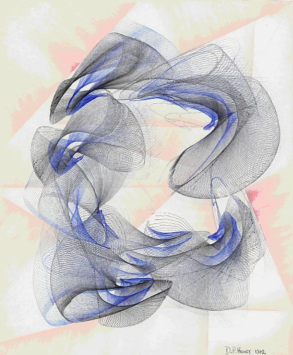
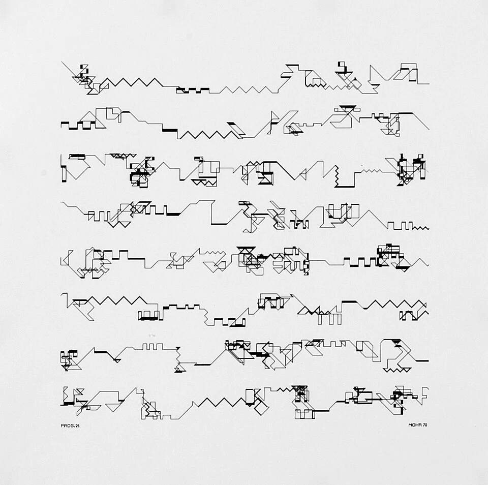
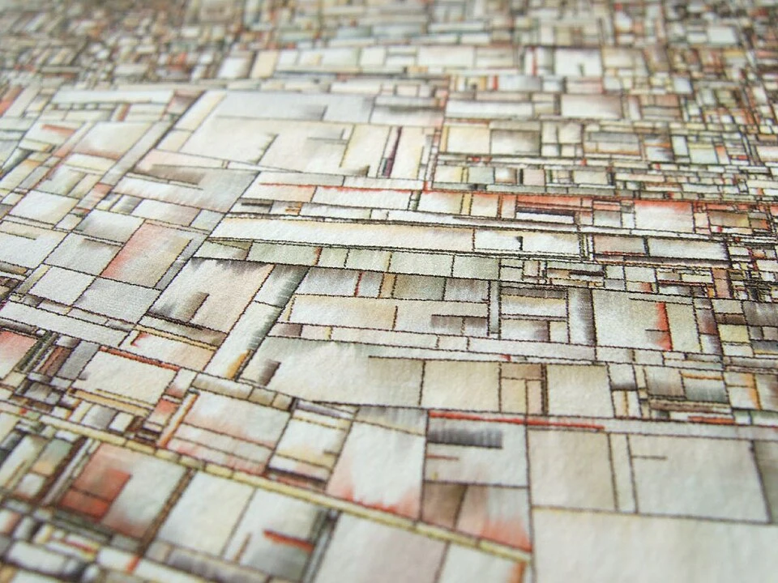
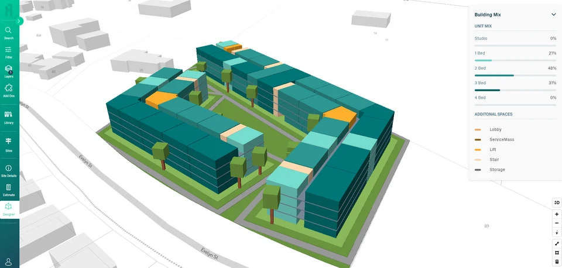

選定理由・よく研究されている
プログラムを入力する代わりに、動く仕組みそのものが線を生む規則です。ペンの動きが少しずつずれながら重なり、一本の線には描けない厚みが生まれます。
作品・制作の例7件を紹介しています。実作品画像4点、参照・関連画像0点。画像の収集は継続中です。
技法・制作方法
Generative design
一つずつ形を描く代わりに、形を生むルールをつくります。線の動きや部品のつながりを決めると、コンピューターが多くの形を生み出します。これがジェネラティブ・デザインの考え方です。
実作品を見る

画像を表示できませんでした。下の出典ページで確認できます。
デズモンド・ポール・ヘンリー / 1960年代（1号機は1960年制作）
プログラムを入力する代わりに、動く仕組みそのものが線を生む規則です。ペンの動きが少しずつずれながら重なり、一本の線には描けない厚みが生まれます。
Desmond Paul Henry Uploaded by Elaine O'Hanrahan at en.wikipedia／Wikimedia Commons（WebPへの変換・縮小）
出典で作品・資料を見る ↗実作品を見る

画像を表示できませんでした。下の出典ページで確認できます。
マンフレート・モーア / 1970年
折れ線を横に追うと、角度や太さが変わるたびに、記号や文字に似たかたまりが現れます。モーアはこのシリーズで、線の幅や長さの変化を確率で扱いました。
Manfred Mohr, New York／Wikimedia Commons（WebPへの変換・縮小）
出典で作品・資料を見る ↗実作品を見る

画像を表示できませんでした。下の出典ページで確認できます。
ジャレッド・ターベル / 2003年のプログラム／2005年のプリント写真
すでにある線に行き当たった新しい線が止まると、何もなかった面に街区のような区切りができます。本図は作者が印刷して撮影した一枚です。
Jared Tarbell from Awesometown, United States of America／Wikimedia Commons（WebPへの変換・縮小）
出典で作品・資料を見る ↗実作品を見る

画像を表示できませんでした。下の出典ページで確認できます。
Archistar / 制作者公開の画面（制作年未詳）
敷地や設計条件を与えると、建物の案が生成されます。紙に残る一枚の絵から、条件を変えて建物を検討するための道具へ、同じ考え方が広がった例です。
Archistarmarketing／Wikimedia Commons（WebPへの変換・縮小）
出典で作品・資料を見る ↗実在する作品・制作物（個別の分野は domain を参照）
簡単なルールと動きから複雑な描画を生む例です。
作品・資料の出典を見る ↗原題：MicroImage
ケイシー・リース / 2001年開始のシリーズ / ソフトウェア作品
日本語の見出しは読みやすさのための呼び名・説明名です。原題は記録欄に示しています。
画像の転載条件は未確認。出典の公開は転載許諾ではありません。
実在する作品・制作物（個別の分野は domain を参照）
文章で示す手順と、それを動かすソフトウェアを区別します。
作品・資料の出典を見る ↗原題：Process
ケイシー・リース / 2004年開始のシリーズ / ソフトウェア・描画
日本語の見出しは読みやすさのための呼び名・説明名です。原題は記録欄に示しています。
画像の転載条件は未確認。出典の公開は転載許諾ではありません。
実在する作品・制作物（個別の分野は domain を参照）
軽さや強さなどの条件を使って形を探す例です。量産導入済みとは断定しません。
作品・資料の出典を見る ↗原題：Bionic Partition
エアバス、オートデスク、エーピーワークス、ザ・リビング / 2015年発表 / 航空機内の仕切りの試作
日本語の見出しは読みやすさのための呼び名・説明名です。原題は記録欄に示しています。
画像の転載条件は未確認。出典の公開は転載許諾ではありません。
機械による素描
プログラムを入力する代わりに、動く仕組みそのものが線を生む規則です。ペンの動きが少しずつずれながら重なり、一本の線には描けない厚みが生まれます。
作品・資料の出典を見る ↗原題：Picture produced by Drawing Machine 1
デズモンド・ポール・ヘンリー / 1960年代（1号機は1960年制作） / 機械による素描
紙にプロッターで描画
折れ線を横に追うと、角度や太さが変わるたびに、記号や文字に似たかたまりが現れます。モーアはこのシリーズで、線の幅や長さの変化を確率で扱いました。
作品・資料の出典を見る ↗原題：P-021-G
マンフレート・モーア / 1970年 / 紙にプロッターで描画
生成プログラムの出力を印刷した作品
すでにある線に行き当たった新しい線が止まると、何もなかった面に街区のような区切りができます。本図は作者が印刷して撮影した一枚です。
作品・資料の出典を見る ↗原題：Substrate
ジャレッド・ターベル / 2003年のプログラム／2005年のプリント写真 / 生成プログラムの出力を印刷した作品
建築設計ソフトの設計例
敷地や設計条件を与えると、建物の案が生成されます。紙に残る一枚の絵から、条件を変えて建物を検討するための道具へ、同じ考え方が広がった例です。
作品・資料の出典を見る ↗原題：Archistar Generative Design Engine
Archistar / 制作者公開の画面（制作年未詳） / 建築設計ソフトの設計例
美術では変化を楽しむルール、工業では重さや強さを確かめる条件が使われます。同じ言葉でも、目的と評価の方法は違います。生成AIだけを指す言葉ではありません。
色を決めるルールと、結果として現れた配色を分けて見ます。
文字もルールで配置できますが、文字を使わない作品もあります。
一枚の結果だけでなく、同じ仕組みが生む変化を比べます。
何を固定し、何を変えられるようにしたかを調べます。
パラメトリック・デザインは、寸法や数値の関係を組み立てる方法です。両方を同時に使うこともあり、完全に別々の分類ではありません。
作者の仕事は消えません。ルール、入力、選び方、公開する結果を決めることも制作です。
機械による描画、計算規則に基づく作品、住宅配置の設計例から、作者が決めた条件と、その条件から生まれる形を見比べます。
作品・制作の例7件を紹介しています。実作品画像4点、参照・関連画像0点。画像の収集は継続中です。